Same private Machine (/tmp/lfqa-pg), Task c56843, branch lf at 7f5a53a. I added two rich-prompt controls to the page: a data-choice with a <p> question and a data-question with a <label>. Rebuilt it, opened the lf page open --print URL in Chrome and used it.
The rich prompts (4, 5) draw once, selectable, at full row width. The bare data-label prompts (1–3) still draw. Bug: the decision card showed its title twice, once in its header and again above Fix here / File Task / Drop. Pass 5's :not(:has(> p, …)) guard added an element's weight to the label rule (0,2,2), so .lf-decision [data-choice]::before (0,2,1) stopped winning.
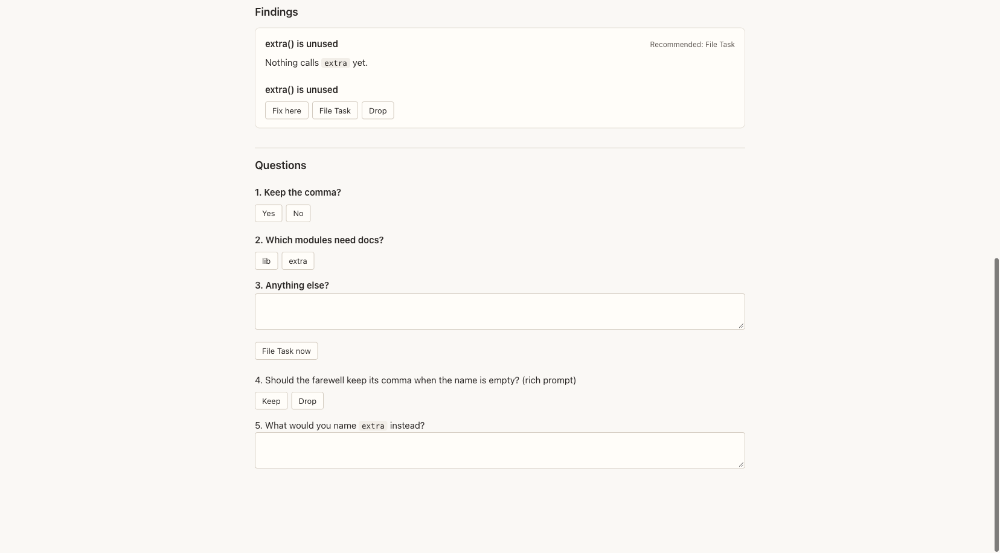
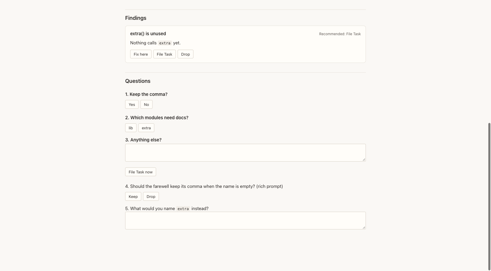
[already ran: …]Picked Keep on question 4, then File Task now → Run: Filed b51c7c in place, queue still 1. Clear emptied the queue and kept the receipt. Then I dragged across "The farewell now says goodbye with a", noted "why a comma here?", picked Yes on question 1 and pressed ⌘↩. The steers row:
(1) `scratch/ship-review.html` § What was built › "The farewell now says goodbye with a" why a comma here? (2) `scratch/ship-review.html` § 1. Keep the comma?: yes [already ran: task.create → b51c7c]
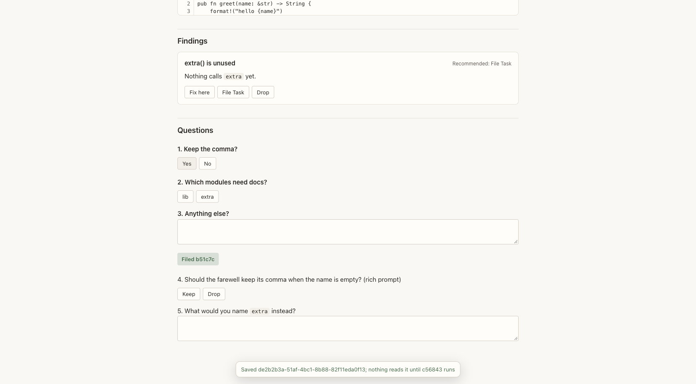
Killed the server by PID, then picked No. Banner: "Loopflow server disconnected — run lf page open scratch/ship-review.html"; the strip switched to Copy reply ⌘↩. Bug (small): the strip still read "Saved de2b2b3a…; nothing reads it until c56843 runs" beside the new, unsent item, which looks as if that item was saved.
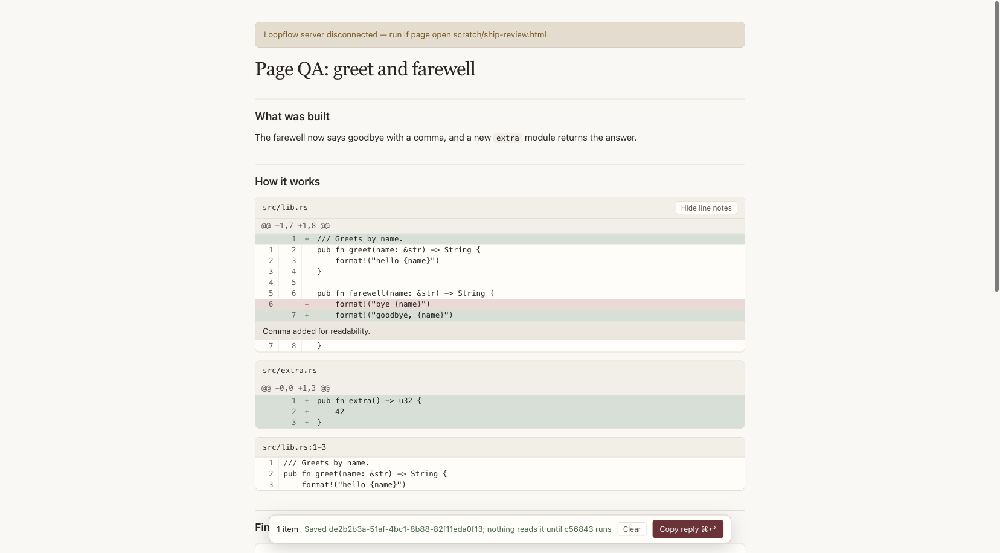
Bug: after lf page open on the restarted server, the queued No was gone and so was Filed b51c7c. File Task now came back, inviting a duplicate Task. The page's localStorage was empty: the listener bound 127.0.0.1:0, so every restart (including lf install) gave a new port, a new origin and empty storage. Dark theme reads fine.
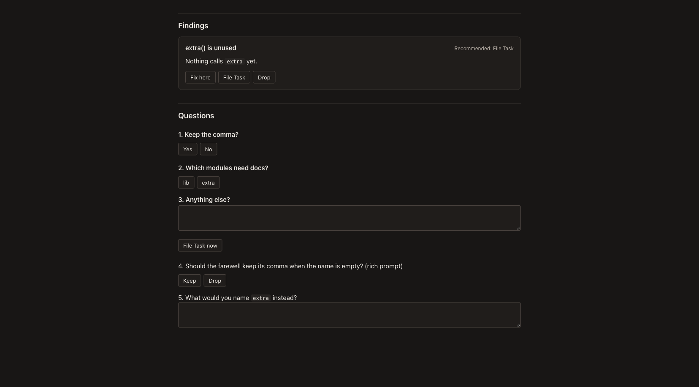
After the fix: port 62051 before and after the restart, a new token (the old URL now gives 404), and the reopened page still has the queued No and Filed bf9df8.
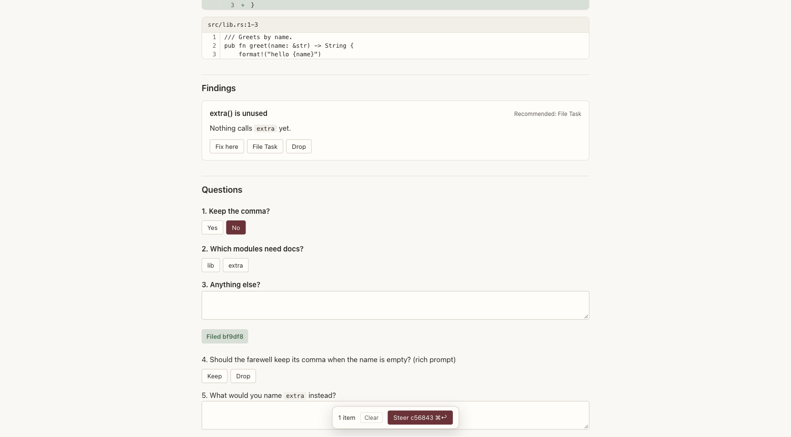
base.css: .lf-decision [data-choice][data-label]::before outweighs the label rule again.server/loopback.rs: Loopback::bind(socket) first tries a port derived from the server's socket path (49152–65535), so each lf home keeps its origin across restarts. An ephemeral port serves if that one is taken. New test: loopback_keeps_its_port_across_restarts_and_yields_a_taken_one. docs/server.md, docs/security.md, the server README and docs/dev/reference.md no longer say 127.0.0.1:0.runtime.js: any edit clears the last send's sentence from the strip. The sentence is set after the post-send clear, so it still shows right after ⌘↩. Checked: "Saved b201441a…" after the send, gone on the next pick.scratch/ship-review.html and scratch/concept-review.html.Checks: cargo test -p loopflow --lib server::loopback:: 3/3; cargo test -p loopflow --test integration page_tests:: 3/3; cargo clippy -p loopflow --all-targets -D warnings clean.
data-lf button in Desktop.localStorage but not live state: a receipt filed in one shows in the other only after a reload. Not tested; noted from the code.scratch/questions.md 1–8 still wait for answers.lf serverA private Machine (/tmp/lfqa-pg) ran the branch lf server. It had a disposable repository and a Task, c56843, whose checkout changed src/lib.rs and added an untracked src/extra.rs. A page fragment used every kit tag: two <lf-diff>, an <lf-file>, a decision, the three control kinds and a data-lf task.create. I built it with lf page build, opened it at the lf page open --print URL in Chrome through the browse extension, and used it as a reviewer would.
The diffs are real: the added doc comment, the bye→goodbye, hunk with its line note, and the untracked file as @@ -0,0 +1,3 @@. Bug: the Questions section showed bare Yes/No and lib/extra buttons and an empty textarea. None of the data-label questions ("1. Keep the comma?") was drawn, so a person couldn't tell what they were answering.
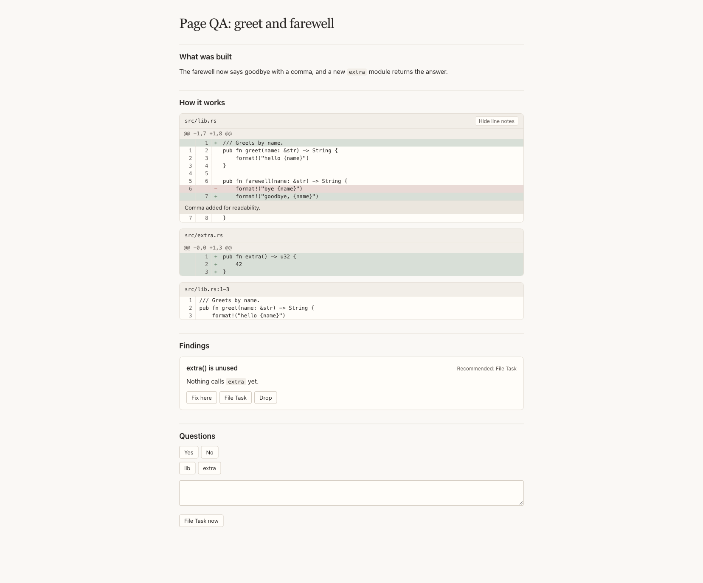
Dragging across "The farewell now says goodbye" opened Note. Saving it put the note under "Your notes". I picked File Task, Yes and extra and typed "ship it". The strip read 5 items · Clear · Steer c56843 ⌘↩, so the page found the loopback host and the readable Task ID. After a reload all five were still there.
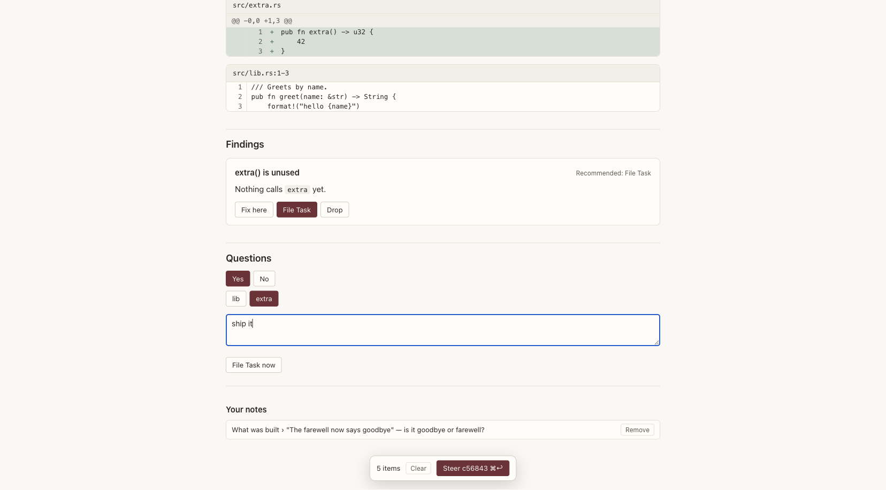
data-lf direct actionThe inline confirm read task.create title=Wire extra() into greet · Run · Cancel. Run turned the button into Filed e1f864, and lf task list showed e1f864 · Wire extra() into greet. The queue stayed at 5.
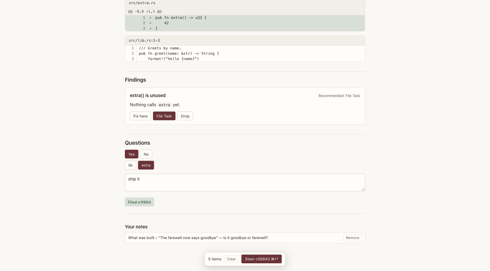
Bug: after a reload, and after any send, the receipt was gone and File Task now was back, inviting a second Task. Receipts were saved to localStorage but never drawn again on load. Desktop had the same hole: ReviewComments.insert(into:) dropped every page state, receipts included.
⌘↩ steers the TaskThe strip showed the server's delivery.sentence ("Saved …; nothing reads it until c56843 runs") and the queue cleared. The steers row, verbatim:
(1) `scratch/ship-review.html` § What was built › "The farewell now says goodbye" is it goodbye or farewell? (2) `scratch/ship-review.html` § extra() is unused: File Task (3) `scratch/ship-review.html` § 1. Keep the comma?: yes (4) `scratch/ship-review.html` § 2. Which modules need docs?: extra (5) `scratch/ship-review.html` § 3. Anything else?: ship it [already ran: task.create → e1f864]
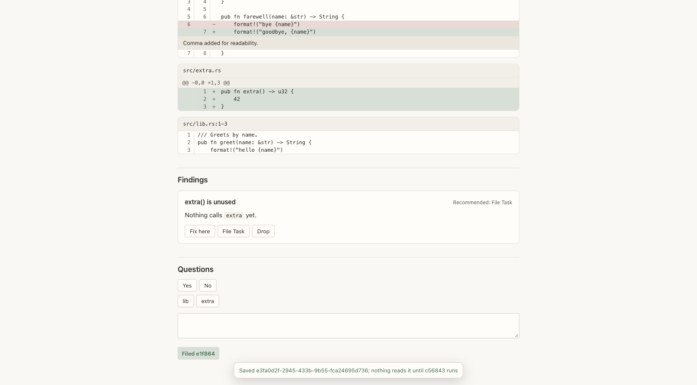
browse refuses file: URLs, so a static http.server on another port stood in. Its WebSocket fails the same way. The strip became Copy reply ⌘↩; File Task now turned into "Offline — added to reply". The copied text was:
(1) `scratch/ship-review.html` § extra() is unused: Drop (2) `scratch/ship-review.html` Run: task.create title=Wire extra() into greet
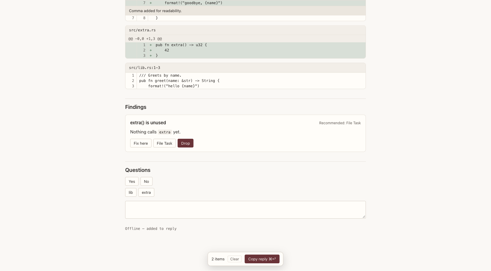
I killed the server by PID with a choice queued. A banner appeared, "lf server restarted; run lf page open scratch/ship-review.html", the strip switched to Copy reply ⌘↩, and the queued item stayed.
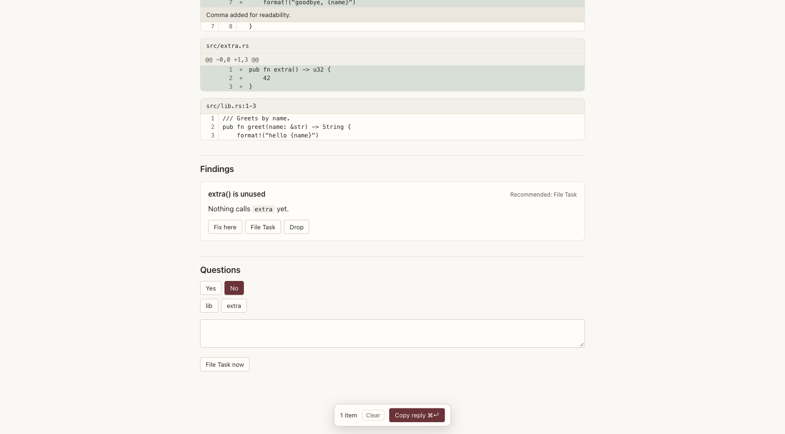
| Request | Answer |
|---|---|
| page GET | 200 with CSP, no-referrer, no-store, nosniff |
wrong token / wrong Host | 404 / 404 |
upgrade without Origin / with a foreign one | 404 / 404 |
upgrade with the right token, Host and Origin | 101 |
/<token>/f/etc/hosts | 200: any absolute path, as designed (questions.md 3) |
An unknown SHA, a <script>, and lf page open on a .page.html each fail and name the line or the build command. Bug: a misspelled data-lf field (titel) failed with "data did not match any variant of untagged enum Operation", which names neither the field nor the cause.
base.css: a control's data-label is drawn as its question above the buttons or textarea. Decision cards skip it because their title already says it.runtime.js: each data-lf button keeps its slot. syncControlsFromState redraws receipts and offline-queued actions from state, so reloads, Desktop remounts and sends keep Filed … in place. A sent receipt is marked reported, and [already ran: …] rides on one reply only. __lfDesktopApplyState(null) now means "sent": drafts are cleared and receipts kept.ReviewDiff.swift: insert(into:) keeps each page's receipts, marked reported, instead of dropping the whole state. pageReceipts skips reported ones. TaskFilesTests/reviewPageCommentsSendOnOneLineWithDiffCommentsAndDoNotResurrect now checks both: the receipt is kept after send, and a second send carries no suffix.page/operations.rs: before strict deserialization, an unknown data-lf field fails with `task.create` has no field `titel` and a missing one with requires `…`.scratch/ship-review.html with the fixed kit.Second pass on the rebuilt lf and a restarted server: the labels show (light and dark). Filed b4ea4b survives a reload and a send. The two steers were … 1. Keep the comma?: yes [already ran: task.create → b4ea4b] and then … 1. Keep the comma?: no with no suffix.
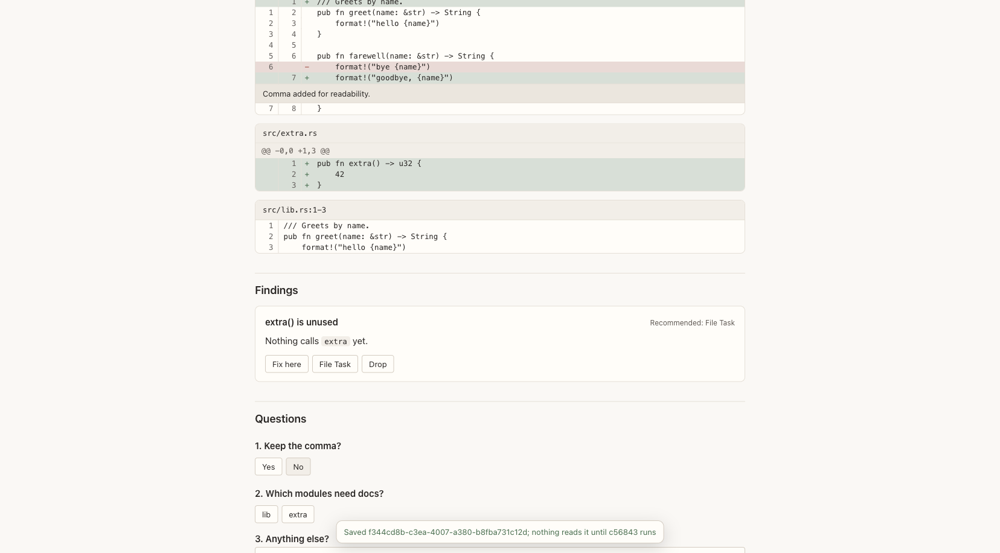
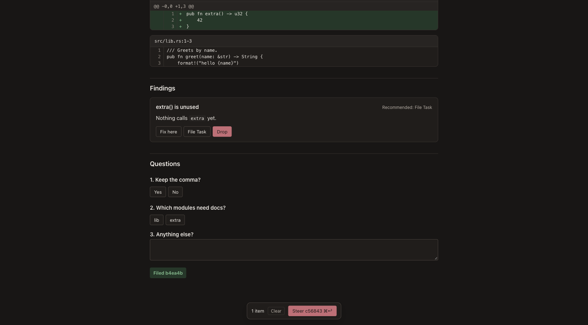
Checks run: cargo test -p loopflow --lib page::operations 1/1; cargo test -p loopflow --test integration page_tests:: 2/2; scripts/test_desktop.sh --filter 'TaskFilesTests/reviewPage|ReviewDiffTests' 19/19. All were run here; gate runs the suites.
Build with real and untracked diffs, a note, choices and answers, ⌘↩ → task.steer with delivery.sentence, a confirmed data-lf with a lasting receipt, the offline copy, the server-gone banner, loopback admission, and light and dark themes.
ReviewCommentsStrip, switching files before sending, a data-lf click, and the receipt after a remount. The bridge logic ran only in the headless Swift tests above.lf page open from a real lf -b. The QA claude stand-in can't answer -p batches. page_tests covers that route.file:// double-click. The extension refuses file URLs; a static server reached the same clipboard host instead.delivery.sentence shows a raw UUID ("Saved e3fa0d2f-…; nothing reads it until c56843 runs"). That sentence comes from the server, so it isn't this page's to change, but it's the one line the person reads after ⌘↩.